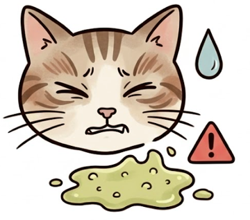
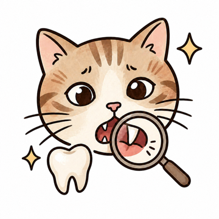
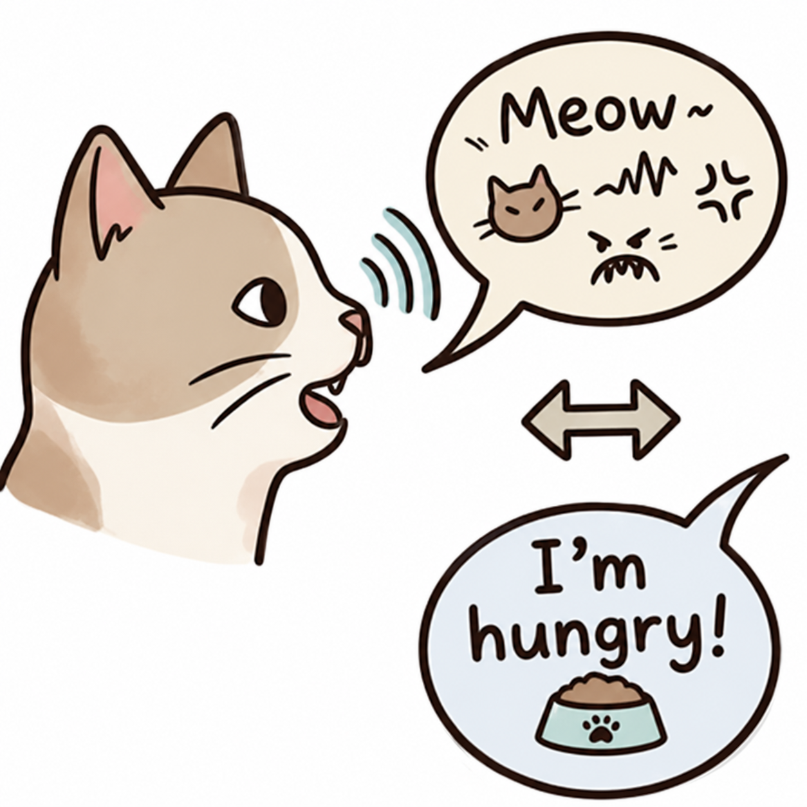

疼痛检测
上传面部或身体照片，AI 评估表情与姿态中的疼痛信号。特别适合善于隐藏不适的老年猫。
拍照或录音，AI 即时分析并给出诊断与护理建议。 建立猫咪档案、持续记录，评估结果会越来越精准。
上传面部或身体照片，AI 评估表情与姿态中的疼痛信号。特别适合善于隐藏不适的老年猫。

拍摄呕吐物照片，AI 分析颜色、质地与可能原因——毛球、饮食问题，或需要就医的警示。

通过便便照片监测消化健康，追踪形态与颜色变化，及早发现肠胃问题。

从侧面拍摄牙齿与牙龈，AI 检查牙结石、炎症等口腔健康隐患。

录制猫咪的叫声，AI 翻译含义、推测场景，并给出回应建议。
检测结果仅供参考，不能替代兽医诊断。紧急情况请立即就医。
从疼痛评估到猫语翻译——每一项检测都简单友好，结果还可生成海报分享。





九龄猫是完整的猫咪健康管理平台——为想要主动守护毛孩子的家长而生。
为每只猫建立档案——品种、年龄、体重、病史。AI 会结合这些信息给出更个性化的分析。
可视化疼痛、便便、呕吐、牙齿和体重趋势。在问题变严重之前，发现细微变化。
与专属猫咪健康 AI 畅聊。饮食、症状、用药——回答基于你家猫的真实记录。
设置疫苗、驱虫、用药提醒。就诊笔记和医疗照片，统一保存在一个地方。
内置心脏骤停、异物卡喉、中毒、中暑、外伤等应急卡片——先稳住，再送医。
连接执业兽医获取专业建议。医生可查看猫咪完整的检测记录，给出更有依据的回复。
添加猫咪的名字、品种、年龄和照片。记录越丰富，AI 分析越精准。
选择检测类型，拍照或录音，几秒内获得 AI 诊断与护理建议。
在健康日历查看趋势，与 AI 管家对话，或在异常时咨询兽医。